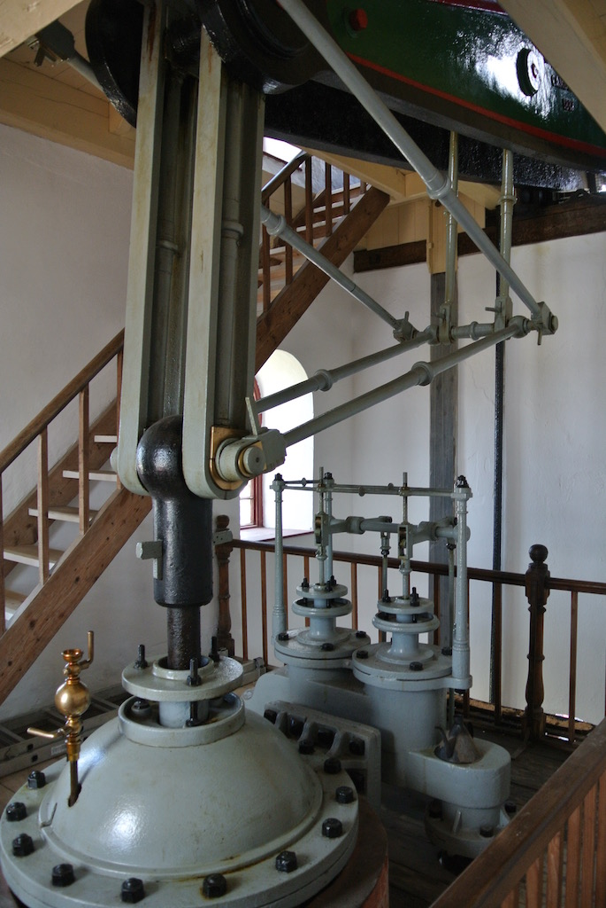

Cornwall June 2015
We agreed with Krista and Paul that we would all go to Cornwall for a week's holiday. They would drive over from Rotterdam, visit some friends in Twickenham and others in Devon, and then join us in some form of cottage in Cornwall. We would then all drive back to Bramber and they would travel home from there.
So on Sunday 28th June we left home at nine o'clock and after twenty miles ran into the traffics jams on the A27 for the Goodwood Festival of Speed! After spending 20 minutes in the queue we came to a road that looked promising and so we diverted around the jam. We stopped at a service area on the M27 for coffee and then stopped at a Tesco at Dorchester for lunch. But they did not have a coffee shop and so we bought a sandwich and ate it in the car! The traffic was heavy on the A31, but improved from just before Dorchester. So we had a very brief stop just after Bodmin and arrived at the cottage park at 4:30, after 266 miles. It is a very good little cottage, with superb views. After a cup of tea and unpacking, we walked along an old tram track to Portraeth. We thought it would take 20 minutes, but it took 40 minutes to get to the beach. After looking around we went into the Basset Arms for a meal, before walking back. My hake with ham was very good, but Angela's salmon cakes were a bit bland.
 On Monday, after a leisurely breakfast and a shower we drove to the Tesco store in Redruth, just five minutes away. As well as some food for lunches we bought two folding chairs for only £10 the two. We had started our lunch when Paul, Krista and Rowan arrived. They had driven from a friend's farm in Devon. After lunch, and several trips to the play area, we went for a short walk along the tram track and then ordered pizzas from the mobile pizza oven that was on site, although Rowan hardly eat anything.
On Monday, after a leisurely breakfast and a shower we drove to the Tesco store in Redruth, just five minutes away. As well as some food for lunches we bought two folding chairs for only £10 the two. We had started our lunch when Paul, Krista and Rowan arrived. They had driven from a friend's farm in Devon. After lunch, and several trips to the play area, we went for a short walk along the tram track and then ordered pizzas from the mobile pizza oven that was on site, although Rowan hardly eat anything.
Tuesday was a warm, bright, sunny day, although there was quite a strong wind from the East. After a leisurely breakfast and shower we made a packed lunch and drove down to Portraeth, complete with bucket and spade. We spent the morning on the beach, paddling and having our lunch, getting back to the cottage mid afternoon. Later we walked down the tram track to Bridge and went to the Bridge Inn for dinner. A bit of a dump, so we ate in the garden (across the car park and next to the river). The food was passable, but only just.
On Wednesday we had a good day out today. We set off a little before midday with a packed lunch to Trebah gardens on the south coast of Cornwall. It was very similar to the Helligan valley, but with good playgrounds for children. We had our lunch on the private beach and then had a cup of tea in the cafe. On our way back we called into Tesco to buy food for dinner, which we cooked in the cottage.
We had a very tiring day on Thursday! At about eleven o'clock Paul and Krista set off to St Ives, where they were meeting some friends from London, who just happened to be on holiday this week. We also set off for Marazion, from where you can walk across the causeway to St Michael's Mount. It had been raining most of the morning and we set off in walking boots, jumpers and kagouls. By the time we had walked across the causeway, in the rain, it had stopped raining and by the time we had eaten some lunch in one of the cafes the sun had come out. Of course, the one thing that I left in the car was my sun hat! The castle and gardens were really good. We were glad that we were wearing boots, since the best paths were cobbles and there were a lot of rocks to clamber over. By the time that we were ready to return to the mainland the tide was in and so we had to catch one of the small boats back.when we got back to the cottage we decided to walk along the tram track to Porthtown (about one and a half mile) for dinner. We walked and walked and walked some more. Eventually we asked a runner how far it was to Porthtown and said about two miles, in the opposite direction! He described how to get to a pub that was further along the track, but he didn't say that it was still nearly a mile! We eventually cut through a caravan site and asked some more people. We were actually quite close, but we had to cross the A30 and were on a road that we had driven down earlier in the day when we were trying to get back to Portraeth. We left the cottage at 6:45 and it had taken us one and a half hours. We left the pub at five past eight and got back to the cottage at ten past nine (we walked faster on the way back).
Friday was a day doing not very much at all. We went to a 'park' not far from here, but it was closed, we think because of travellers who had set up camp there. Then we tried a cyder farm, but we could not eat our own food there, so we came back to the cottage for lunch and then went to some shops (M&S and Next) to get Rowan a new dress and Paul a belt, plus some food for this evening. I took P&K to a pub in Porthtowan where they ate and were hoping to meet friends. Then I collected them later. Meanwhile we entertained Rowan and put her to bed, eventually.
Saturday was another dry, quite sunny, breezy, but interesting and enjoyable day, our last in Cornwall. P, K & R were going to the wedding that was the reason we came here in the first place. So we left them at the cottage just before lunch and headed for East Pool mine, a National Trust disused tin/copper mine. Access to the main part was via the Morrisons car park! The mine had suffered a roof fall and so the original mine entrance was abandoned and a new one built from the other end of the 'load'. This was in 1921, but the mine closed after the war. We then went on to Carn Brea to see the monument, castle (folly) and view. We can see the monument and castle from the cottage. The steward at East Pool dew us a map, which was very helpful. We got back in time to have a chat with Victoria. The poor WiFi just about held up. Then we packed and walked down the tram track to the Basset Arms for dinner. We were home before the others returned from the wedding.

On Sunday 5th July it took us surprisingly little time to pack everything into the cars and set off. P&K left first and we took back the keys and left the cottage at about 9:30. It was raining when we left and during the first part of the journey (most of Cornwall and Devon) we had torrential rain. Luckily the weather then improved and it was sunny and dry for the rest of the journey. After a number of stops, including lunch in the Dorchester Tesco car park again, we got home at a quarter to five. We had time to get most things sorted out before P&K arrived. We then simply cooked poached eggs and chips for dinner!
© David James 2016 Last updated: 16th October 2016